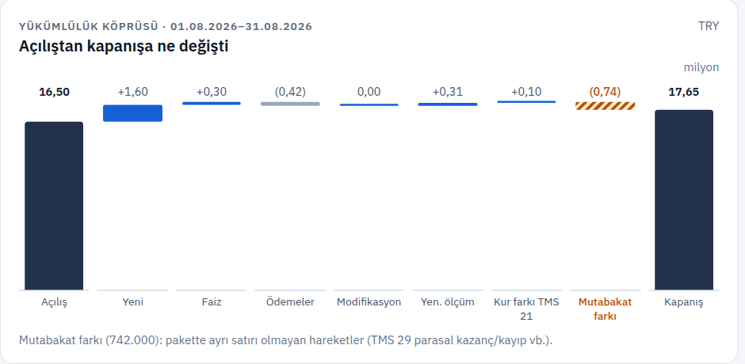

01 · Portföy köprüsü
Açılıştan kapanışa her hareket, ayrı satırda.
- Eklemeler, faiz, ödemeler, değişiklikler, kur farkı tek köprüde; toplamı siz değil sunucu kurar.
- Açıklanamayan fark gizlenmez: “Mutabakat farkı” olarak ayrı çubukta görünür.
- Şirketler arası toplam alınmaz; her şirket kendi para biriminde raporlanır.
